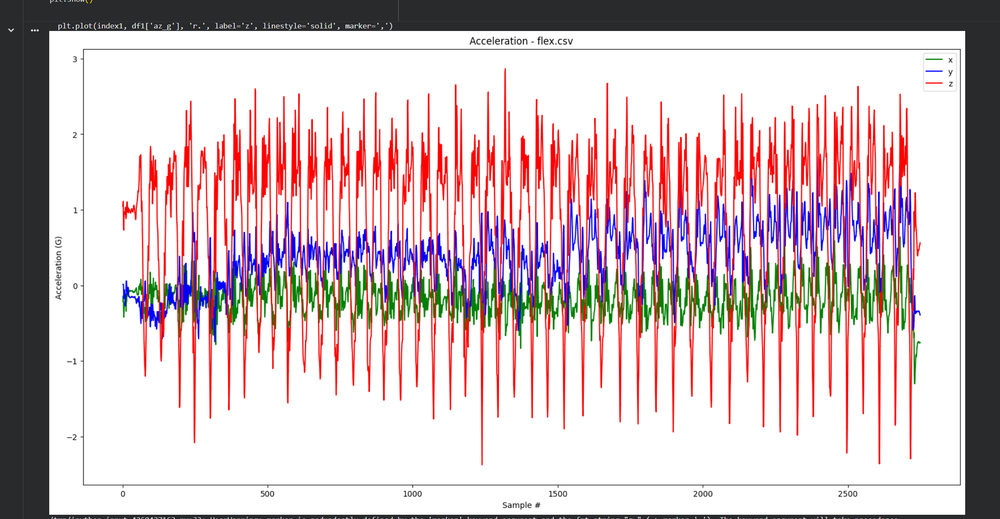
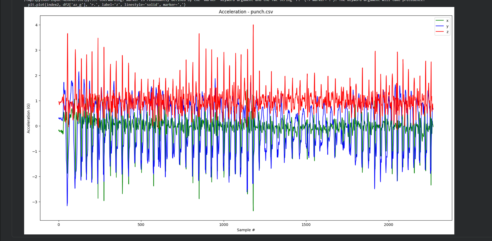
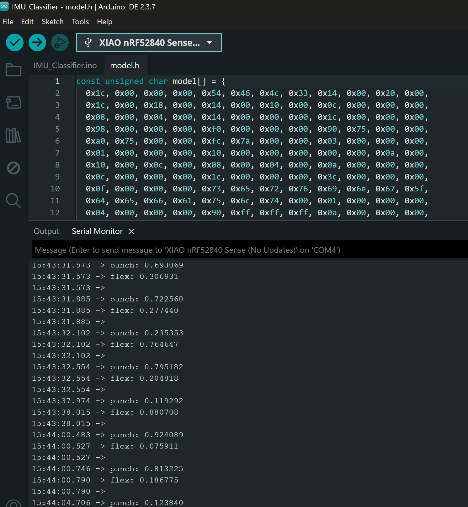

Overview
In Phase I, I collected IMU accelerometer data from the Seeed XIAO nRF52 over BLE, labeled two gestures (punch and flex), trained a TensorFlow model in Colab, converted it to TFLite, and deployed it to the microcontroller for real-time classification.
Files (Phase I)
Note: Some browsers may download CSV/model files when opened from GitHub Pages (this is normal).
Step 1: Find BLE MAC Address (Arduino)
Upload the BLE sketch and use Serial Monitor to read the device address.

Step 2: Data Collection (Punch & Flex)
I collected accelerometer data for two gestures (punch and flex) using BLE streaming and saved them as
punch.csv and flex.csv.

IMU Signal Plots


Step 3: Model Training (Colab)
I trained a TensorFlow model using the collected datasets and tracked performance using loss and MAE graphs.


Step 4: Deploy Model to Arduino
The trained model was converted to a TensorFlow Lite header file (model.h) and added to the
Arduino IMU classifier project for on-device inference.
